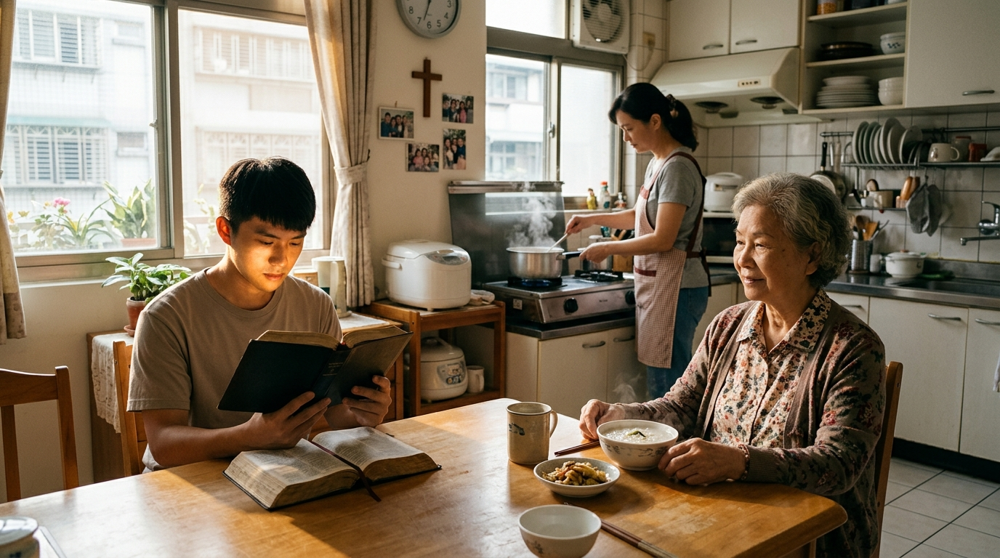

耶穌來到世界，不只是發生一個神蹟， 而是進入一個真實的家庭、真實的歷史， 最後回到一個普通的地方生活。
路加福音 2:21–40 描述耶穌出生後， 約瑟和馬利亞按照律法， 將耶穌帶到耶路撒冷的聖殿。
在那裡，他們遇見了 西面與 亞拿。
西面等候上帝已經很久， 當他看見耶穌時， 他知道自己已經看見了上帝所預備的救恩。
亞拿同樣是一位長年禱告、敬拜、 等候上帝的年長姊妹。 她看見耶穌後，也向其他人宣告這個好消息。
而更重要的是： 我們是否能把在聖殿裡所領受的信仰， 帶回到自己的「拿撒勒」—— 家庭、工作、人際關係與每天的生活？
這段經文可以分成五個重要階段。
耶穌接受割禮， 約瑟和馬利亞按照律法把祂帶到聖殿。
一位長久等候的老人， 在聖靈引導下認出耶穌就是上帝的救恩。
耶穌的來到帶來榮耀， 也帶來十字架道路上的痛苦。
年老的亞拿長久禱告、敬拜， 看見耶穌後向眾人宣告救贖。
聖殿的經歷結束後， 耶穌回到普通家庭中漸漸長大。
按照猶太人的律法， 男孩出生第八天要接受割禮。
耶穌雖然是上帝的兒子， 卻真正進入人的歷史、文化與生活。
祂不是遠離人類生活的上帝， 而是成為真正的人， 從嬰兒開始成長。
上帝的救恩進入世界， 是從一個嬰兒、一個家庭、 一天一天的生活開始。
信仰不只是主日聚會。 洗碗、工作、照顧家人、 探訪老人、服事教會， 都可以成為信仰生活的一部分。
「獻與主」提醒我們， 孩子不是父母的私人財產。
約瑟和馬利亞知道： 這個孩子是上帝所賜、 也是上帝所託付的。
我們所擁有的一切， 包括家庭、子女、工作、 金錢、時間與能力， 都是上帝所託付的。
成熟的基督徒不只是問： 「上帝能給我什麼？」 更要問： 「上帝要我如何使用祂所託付給我的？」
西面等候了很久， 直到有一天，他在聖殿裡遇見耶穌。
西面是一個公義、虔誠、 長久等候上帝的人。
他不知道上帝什麼時候成就應許， 卻仍然繼續等候。
信心不只是相信上帝會照我的時間表做事， 而是相信即使我不知道時間表， 上帝仍然掌權。
有些禱告可能需要等很久。 「還沒有答案」不等於 「上帝沒有工作」。
西面不是單靠自己的智慧認出耶穌。 路加特別指出： 聖靈在他身上。
他所看見的不只是「一個嬰兒」， 而是上帝的救恩。
人能真正認識基督， 不只是因為知識， 也需要聖靈開啟人的心。
每一次查經開始時， 都值得禱告： 「求聖靈開我們的心， 讓我們不只是讀懂文字， 更能看見基督。」
耶穌的到來不是讓所有人都舒服。 祂會要求人做選擇： 接受祂或拒絕祂。
對馬利亞而言， 蒙受大恩並不代表人生從此沒有痛苦。
跟隨上帝不代表人生一定順利。 有時候，上帝的工作甚至會經過 人眼中的痛苦與失敗。
當我們遇到疾病、失落、 家庭問題、服事挫折時， 不要輕易推論： 「上帝離開我了。」
十字架提醒我們： 上帝甚至能在痛苦中完成祂的工作。
亞拿是一位年老的寡婦， 從人的角度看， 她似乎不是社會上的重要人物。
但是她在上帝的救恩故事中 扮演了重要角色。
年齡、身分、社會地位， 都不是上帝衡量服事價值的唯一標準。
有些人可能因為年紀大了， 覺得自己「沒有用了」。
但亞拿提醒我們： 禱告、陪伴、鼓勵、見證， 都是非常重要的服事。
亞拿看見耶穌之後， 沒有把這份喜樂留給自己。
她稱謝上帝， 然後向其他人分享。
遇見基督， 自然會產生感謝與見證。
傳福音不一定要站上講台。 一句： 「我們一起禱告，好嗎？」 也可能是一個很真實的福音見證。
敬拜結束了，生活繼續。
而信仰真正的考驗，
往往就在離開教會之後。
聖殿裡發生了非常重要的事情： 西面、亞拿都認出耶穌就是救恩。
但是經文接下來卻非常平靜： 他們回家了。
耶穌回到拿撒勒， 在一個普通家庭裡繼續成長。
信仰不只是聖殿裡的敬拜， 更是在普通生活中活出來。
主日的敬拜， 最後要帶我們回到星期一。
回到家庭、工作、 社區與人際關係， 才是真正活出信仰的地方。
「漸漸長大」代表一個過程。 耶穌不是突然跳過成長， 而是在真實的人生中逐漸長大。
身體成長、智慧成長， 同時也活在上帝的恩典中。
健康的基督徒生命， 也應該是一個持續成長的生命。
我們不需要要求自己 「一天變成完全人」。
今天比昨天更有愛一點、 更有耐心一點、 更願意饒恕一點、 更願意禱告一點， 都是生命的成長。
如果要把路加福音 2:21–40 濃縮， 可以記住這七件事。
上帝的救恩不是遠離人的生活， 而是進入家庭、工作與日常。
家庭、子女、金錢、能力與時間， 都是上帝所託付的。
西面提醒我們： 上帝沒有按照我的時間表工作， 不代表上帝沒有工作。
求聖靈開啟我們的眼睛， 讓我們在日常生活中認出上帝的工作。
教會不是封閉的俱樂部， 而是被差遣出去成為光的群體。
馬利亞的經歷提醒我們， 苦難不一定代表上帝離開我們。
亞拿提醒我們， 禱告、陪伴與見證， 都是上帝寶貴的服事。
西面與亞拿看見的是耶穌， 我們今天要學習在生活中看見上帝。

不只是看到「一個需要被照顧的人」， 而是看到一個上帝所愛、 交在我們面前的人。
我們可能覺得自己能做的事情越來越少， 但亞拿提醒我們： 禱告本身就是重要的服事。
不一定要站上講台。 分享自己的生命故事、 一起禱告， 都可以成為福音的見證。
真正的信仰生活才正要開始。 我們要把在教會領受的恩典， 帶回家庭、工作與社區。
聖殿代表敬拜、聖靈、啟示與救恩。
拿撒勒代表家庭、工作、 人際關係與平凡生活。
真正的信仰， 不只是我們在聖殿裡如何敬拜上帝， 而是離開聖殿之後， 如何在自己的「拿撒勒」活出福音。
約瑟和馬利亞帶著耶穌進入聖殿， 西面和亞拿在聖殿裡看見救恩。
但故事沒有停在聖殿。
「他們回到拿撒勒。」
這也是我們今天的信仰道路。
我們在教會敬拜， 在查經中聆聽上帝的話， 在禱告中經歷上帝的恩典。
然後， 我們離開教會， 回到自己的家庭、 工作、社區與人際關係。
那裡，就是我們今天的「拿撒勒」。
「主啊， 求祢讓我不只在教會看見祢， 也讓我在每天的生活中看見祢。」
不只是回答問題， 而是讓聖經進入我們自己的生命故事。
如果上帝目前還沒有照你的期待回答， 你會如何學習在等待中繼續相信祂？
在家庭、工作、服事、人際關係中， 有沒有一個地方是你特別需要把信仰活出來的？
如果暫時不考慮「體力」、 「年齡」或「能力」， 你認為上帝現在仍然可以透過你 祝福哪一個人？